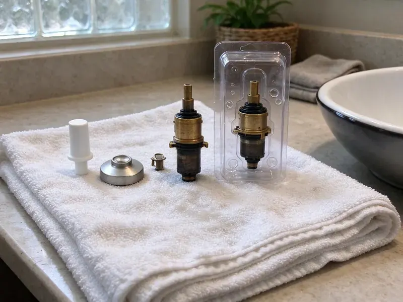

Shower Installation in Bowling Green, KY
Upgrading your bathroom in Bowling Green, KY? BFK Plumbing provides professional shower installation services designed for Kentucky homes.
- Leak-Tested Pans and Drains
- Code Compliant
- Valves Set to Code
- Licensed, Insured Plumbers
Build the Shower You Want With Plumbing Done Right in Bowling Green, KY.
Our team is ready to help you choose and install the perfect shower for your home.
Complete Shower Installation Plumbing in Bowling Green, KY
BFK Plumbing installs the plumbing for new showers, including valves, supply lines, shower arms, body sprays, pans and drains. We set each component at the right height and depth for your finished wall and pressure-test before tile goes on. That safeguards your investment from leaks you cannot see.
Our expertise includes:
- Multi-head, body spray and rain shower plumbing layouts
- Compliance with all local plumbing codes
- Handle complex plumbing rough-ins for new showers

Additional Bathroom Plumbing Services in Bowling Green, KY
From toilets to showers, our bathroom plumbing team in Bowling Green, KY handles repairs, installs, and upgrades with tidy, code-compliant work.


Customers
Why Choose BFK Plumbing for Shower Installation in Bowling Green, KY?
Our team focuses on efficient, clean work, minimizing disruption to your home during the installation process. We ensure every shower is installed to provide years of reliable service.
- Correct Slope, Pans and drains are set so water drains fully without puddles.
- Pressure Tested, Valves and supply lines are tested before tile goes up.
- Licensed Plumbers, Our technicians are fully licensed and insured, guaranteeing expert service for your shower installation.
Citywide Coverage
No matter where you are located in Bowling Green, our skilled plumbers are just a call away for your shower installation project. We are familiar with the diverse housing styles across Bowling Green, ensuring tailored solutions for every home.
Experienced Team
We have installed curbless showers, steam showers and multi-head systems with body sprays. That experience helps you get the shower you want without any surprises.
Safety-First Approach
We follow code for drain size, trap configuration and venting. Pans are flood-tested before tile so leaks are found early.
Trusted Certified Bowling Green Plumbing Services Professionals
At BFK Plumbing, we take pride in providing licensed, certified plumbing services throughout Bowling Green, KY. Backed by leading industry credentials, our experienced plumbers combine technical skill with genuine customer care. Whether it is repair, installation, or maintenance, we follow strict safety and quality standards to deliver long-lasting results you can trust.
Call Us Now PHCC Plumbing Contractor Recognition
PHCC Plumbing Contractor Recognition Better Business Bureau (BBB) Accreditation
Better Business Bureau (BBB) Accreditation Angi Certified Pro
Angi Certified Pro ISO 9001 Quality Management Certification
ISO 9001 Quality Management CertificationProfessional Shower Installation Services in Bowling Green, KY
Prefab Shower Unit Installation in Bowling Green, KY
Fiberglass and acrylic shower units are budget-friendly and quick to install. We set the base, connect the drain and install the valve and trim. Prefab units are ideal for guest baths, rentals and guest houses. We make sure the base is fully supported so it does not flex or split.

Custom Shower System Installation in Bowling Green, KY
For homeowners looking for a more personalized bathing experience, BFK Plumbing provides custom shower system installations. This includes multi-head showers, rain showerheads, body jets, and steam shower units. We carefully plan the plumbing layout to accommodate multiple fixtures and ensure adequate water supply and pressure. Our expertise ensures that complex systems work smoothly.
Shower Valve & Fixture Installation in Bowling Green, KY
Beyond the main shower unit, we also install new shower valves, diverters, and various fixtures. This includes pressure-balancing valves to prevent scalding, thermostatic valves for consistent temperature, and different showerhead types like rain showers or handheld units. Our team ensures all connections are watertight and that the fixtures operate smoothly, enhancing your showering experience. We can upgrade outdated fixtures to newer, more efficient models.
Standard Shower & Tub Installation in Bowling Green
BFK Plumbing handles the complete installation of standard shower and tub combinations. This includes setting the tub, installing the shower valve, connecting the showerhead and spout, and confirming proper drainage. We work with various materials like fiberglass, acrylic, and cast iron, making sure the unit is level and securely sealed to prevent leaks, a common issue with older installations that were not done correctly. Our process accounts for existing plumbing layouts to limit wall alterations.
Cost-Effective Shower Upgrades in Bowling Green, KY
Investing in a new shower can noticeably improve your home's value and comfort. BFK Plumbing helps homeowners in Bowling Green choose cost-effective shower solutions that fit their budget and needs. We go over various options, from basic, durable units to more elaborate, water-saving models. Our transparent pricing means you know the full cost upfront, allowing you to make an informed decision without hidden fees.
Custom Shower Enclosure Installation in Bowling Green
BFK Plumbing provides comprehensive services for custom shower enclosures, including multi-head showers, body sprays, and steam units. These installations require precise planning for water lines, pressure balancing valves, and drainage systems. We ensure all components are correctly sized and installed to deliver strong performance and water flow, taking into account the water pressure variations sometimes seen in older neighborhoods. Proper sealing is critical for these complex systems.
Curbless Shower Installation in Bowling Green
Curbless showers have no step, which makes them easier to use and gives a modern look. They require a recessed floor and careful drain placement, often with a linear drain. On a slab, we may need to lower the floor in the shower area. We work closely with your contractor to plan the slope and waterproofing.

Shower Valve & Trim Installation in Bowling Green, KY
The shower valve is the heart of your shower's operation, controlling water temperature and flow. BFK Plumbing installs all types of shower valves, including pressure-balancing, thermostatic, and diverter valves. We also install new trim kits, including handles, spouts, and showerheads. Proper valve installation prevents scalding and provides consistent water temperature, a critical comfort feature for your home in Bowling Green.
Shower Installation Near Me in Bowling Green, KY
When you search for shower installation near me in Bowling Green, KY, BFK Plumbing is your local, reliable choice. We take pride in fast response times and thorough service, ensuring your new shower is installed correctly and efficiently. Our location allows us to promptly send a skilled plumber to your doorstep.
Our plumbers are local to Bowling Green and understand area homes, foundations and permit requirements. We give clear pricing and test everything before walls close. Every installation is backed by our workmanship warranty.
BFK Plumbing at a Glance
- Fully licensed plumbing team covering Bowling Green, KY
- Same-day appointments and 24/7 emergency response
- Upfront, flat-rate pricing before work begins
- 4.8-star rated by 309+ Kentucky customers
Bowling Green Map
Bowling Green Information
- Population
- 76,212
- Area codes
- 270/364/931
- Service area
- Bowling Green and communities within 40 miles
- Nearby
- Hopkinsville, Elizabethtown, Radcliff, Owensboro
Around Bowling Green, quick temperature swings in late winter can crack exposed pipes and loosen joints in older plumbing. In Bowling Green, KY, proper shower installation is vital to prevent water damage to your home's foundation and structure, since even small leaks can grow into bigger problems.
Expert Services
Trust our professionals for reliable BFK Plumbing solutions in Bowling Green, KY.
Our Specialized Plumbing Services in Bowling Green, KY
At BFK Plumbing, we provide a complete range of plumbing services across Bowling Green, KY. From leak detection to full system installations, our team ensures fast, precise, and affordable service for both residential and commercial properties. Explore our core services below:


How Our Shower Installation Service Works in Bowling Green, KY
BFK Plumbing follows a structured approach to every shower installation, guaranteeing quality results for your Bowling Green home.
Request a Quote
Start by calling BFK Plumbing at (502) 300-9896 or filling out our online form to schedule an initial consultation. We will discuss your shower installation needs and preferences.
Site Assessment
Our plumber visits your home in Bowling Green to check the existing plumbing, measure the space, and discuss suitable shower options. We provide a detailed, transparent estimate.
Professional Installation
Our licensed technicians expertly install your new shower, handling all plumbing, sealing, and finishing work. We make sure it meets all local codes and works properly.
Frequently Asked Questions About Shower Installation in Bowling Green
The cost of shower installation in Bowling Green varies widely, typically ranging from $1,500 to $6,000 for standard units, and $5,000 to $15,000 or more for custom or luxury systems. Factors like shower type, materials, plumbing changes, and labor complexity affect the final price. We provide upfront, detailed quotes after assessing your specific project.
BFK Plumbing stands behind our shower installations with a solid warranty on our workmanship, typically for one year. Manufacturer warranties on the shower unit and fixtures will also apply, usually ranging from one year to a lifetime, depending on the brand and component. We provide all warranty details before beginning work.
Yes, BFK Plumbing understands that a new shower installation can be a significant investment, and we offer various financing options to help make your project more affordable. Please contact our team at (502) 300-9896 to discuss the available plans that can fit your budget and allow you to get the shower you need without delay.
DIY shower installation is generally not recommended due to the complexity of plumbing connections, waterproofing, and local building codes. Improper installation can lead to costly leaks, water damage, mold growth, and unsafe conditions. Hiring a professional like BFK Plumbing ensures the job is done correctly, safely, and to code, saving you potential headaches and expenses down the line.
Signs your old shower needs replacement include ongoing leaks that damage walls or floors, extensive mold or mildew that returns despite cleaning, severe cracks in the shower pan or enclosure, or outdated plumbing that constantly fails. If repairs are becoming frequent and costly, replacement is often the more economical long-term solution. Around Bowling Green, quick temperature swings in late winter can crack exposed pipes and loosen joints in older plumbing.
BFK Plumbing installs a wide range of trusted shower brands, including but not limited to Kohler, Moen, Delta, American Standard, and Sterling. We can work with any brand you prefer or recommend options based on your budget and desired features, confirming quality and availability for Bowling Green homeowners.
Absolutely. We are good at making the most of space, even in smaller bathrooms common in older homes. We can recommend compact shower stalls, corner units, or custom designs that maximize function without overcrowding your bathroom. Our goal is to create a comfortable and practical shower area.
A pressure-balancing valve maintains a consistent temperature by balancing incoming hot and cold water pressure, preventing sudden temperature changes. A thermostatic valve maintains a precise temperature setting regardless of pressure fluctuations, offering a higher level of comfort and safety, especially in homes with children or elderly residents.
What People Are Saying About Our Plumbing Experts?

Sofia M.
Two new toilets installed in one visit, no mess left behind, and the tech even adjusted a faucet he noticed was dripping. Fair pricing and really friendly.
Toilet Installation · Louisville, KYLaura S.
I scheduled a water heater replacement, and the team made the process smooth and affordable. The new unit works perfectly, and they cleaned up after completing the job.
Water Heater Replacement · Bowling Green, KY
Robert G.
The trenchless sewer replacement saved our front yard. They walked us through the camera inspection footage first so we knew exactly what we were paying for.
Sewer Line Replacement · Radcliff, KY
Emily R.
I called BFK Plumbing for plumbing repair, and the technician was fast, polite, and thorough. They explained the problem clearly and fixed it the same day. I will definitely hire them again. Highly recommended!
Plumbing Repair · Louisville, KY
Patricia H.
We had a slab leak that two other companies could not find. BFK Plumbing located it in under an hour, explained our options, and the price matched the quote to the dollar.
Slab Leak Repair · Owensboro, KY
Daniel K.
A pipe burst at 11 pm and they actually answered. The plumber showed up within the hour, shut everything down, and had us back to normal the next morning. Could not ask for more.
Emergency Plumbing · Owensboro, KY